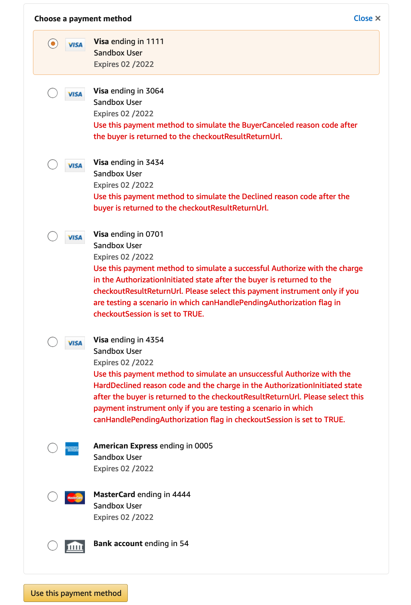

Testing your integration¶
After a successful configuration, you should test your installation. Only after successfully testing in the Sandbox mode you should switch to the Live environment and make the button visible for all your customers.
These tests should cover the different workflows that you encounter while processing orders. Include the standard process like receiving an order, invoicing, shipment and alternative processes like refunding orders. Verify that all objects in your Magento admin are in the expected status and you correctly received all order information including the shipping address, contact details and the billing address (if applicable).
Next you should test also declines. You can use the test payment methods provided in Sandbox mode to simulate transaction declines. After your testing, verify the log files to make sure no exceptions have occurred.
Note
PSD2 Handling and Automatic Decline Handling are not testable in Sandbox mode. Your website will always receive the final result of the transaction if Authorization mode is set to Immediate. If Authorization mode is set to Automatic, the final result of the transaction might come at a later time (always within 24 hours).
How to create a Sandbox test account¶
To use the sandbox environment, you need to create specific test accounts for the sandbox environment.
- Login into Seller Central.
- Choose the menu .

- Click on Create a new test account.

- Fill in the form using a valid email address. The account can be used immediately after the account creation.

- Add other delivery addresses to the test account (optional).

Available Simulations¶
1111, 0005, 4444, 54 - Immediate Happy Flow ¶
With these test payment methods, the test transaction will be immediately successful (Happy Flow) and the buyer will be redirected to an order confirmation page.
3064 - BuyerCanceled¶
The payment authorization will immediately come back as declined due to a buyer action inside Amazon Pay hosted page. The buyer will be redirected to the initial step of the checkout and dedicated error message will be shown.
3434 - Declined¶
The payment authorization will immediately come back as declined due to a Payment Processor decline. The buyer will be redirected to the initial step of the checkout and dedicated error message will be shown.
0701 - Pending then Success (Deferred Happy Flow) ¶
Note
You need to test this payment method, in addition to the previous ones, only if Authorization Mode is set to Automatic.
The payment authorization result will be pending during checkout. The buyer will be redirected to an order confirmation page, but the order status will be Payment Review. Order status will be updated asynchronously (via Polling or IPN) and will turn into Processing.
0701 - Pending then Declined (Deferred Decline) ¶
Note
You need to test this payment method, in addition to the previous ones, only if Authorization Mode is set to Automatic.
The payment authorization result will be pending during checkout. The buyer will be redirected to an order confirmation page, but the order status will be Payment Review. Order status will be updated asynchronously (via Polling or IPN) and will turn into Canceled.
Capture Pending¶
You can simulate a Pending response returned for a Payment capture during invoice creation (only when Payment Action is set to Charge on Shipment). In order to do it, submit the following Invoice comment during invoice creation:
{
"x-amz-pay-simulation-code": "CaptureInitiated"
}